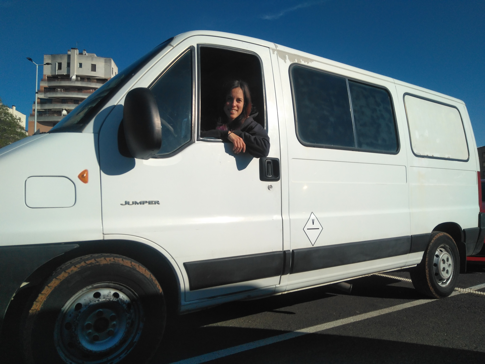

Hola! Si quieres seguir el proceso de camperizacion de una furgoneta este es tu sitio.
La Fragonetti es una Citroen Jumper H1L2 del año 2005. Fue comprada a un señor que la usaba para el campo...
y solo por la cantidad de tierra que se extrajo en la limpieza interior...diria que se recorrio los campos de toda España y mitad mundo.
Muy entretenido todo.
